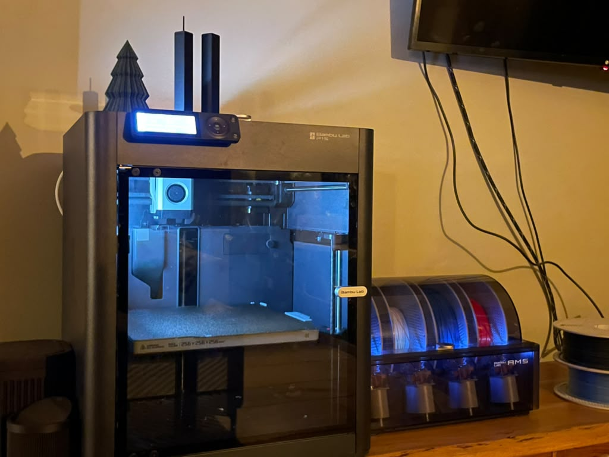

Formaat en bouwvolume
De printplaat bepaalt hoe groot een object in één keer kan worden. Print je vooral kleine onderdelen? Dan is een extra groot bouwvolume misschien niet nodig.
De beginnersgids
Een eigen printer opent een wereld aan mogelijkheden. Met deze praktische tips ontdek je waar je op kunt letten voordat je er een kiest.
Ontdek waar je op let
Eerst even nadenken
Wat je wilt maken, hoeveel ruimte je hebt en hoeveel tijd je aan je printer wilt besteden: dat zijn goede uitgangspunten voor je keuze. Schrijf eerst op wat je graag wilt printen. Dan wordt het makkelijker om eigenschappen en prijzen te vergelijken.
Vind de juiste match
Vergelijk niet alleen de prijs. Kijk ook naar wat de printer je dagelijks biedt.
De printplaat bepaalt hoe groot een object in één keer kan worden. Print je vooral kleine onderdelen? Dan is een extra groot bouwvolume misschien niet nodig.
Sommige printers vragen meer afstelling en aandacht. Functies zoals automatische kalibratie en een goed slicerprogramma kunnen de start makkelijker maken.
Voor veel beginnersprints met PLA werkt een open printer prima. Een afgesloten printer kan van pas komen bij materialen die gevoeliger zijn voor afkoeling, zoals ABS of ASA.
Een systeem voor meerdere filamentrollen kan automatisch tussen kleuren wisselen. Dat is handig als je het echt gebruikt, maar niet noodzakelijk om met 3D-printen te beginnen.
Controleer of de slicersoftware duidelijk is, goed bij de printer past en uitleg heeft voor beginners. Een actieve community is ook handig als je vragen hebt.
Extra accessoires klinken aantrekkelijk, maar je kunt vaak eerst ontdekken wat je mist. Koop later pas uitbreidingen die passen bij de dingen die je echt print.
Kies materiaal met een reden
Filamenten verschillen in printgemak, eigenschappen en de omstandigheden die ze nodig hebben.
PLA is voor veel eerste prints een fijne keuze. Er zijn veel kleuren en profielen beschikbaar. Volg altijd de aanwijzingen voor het specifieke filament dat je koopt.
PETG wordt vaak gekozen als een onderdeel sterker of minder bros moet zijn dan vergelijkbare PLA-prints. De precieze eigenschappen hangen af van het filament en het ontwerp.
Deze materialen stellen andere eisen aan de printer en de omgeving. Bekijk de veiligheids- en printinstructies van de fabrikant en zorg voor de aanbevolen ventilatie.
Materialen en printinstellingen kunnen per merk verschillen. Controleer altijd de instructies van de printer- en filamentfabrikant.
Kijk verder dan de aanschafprijs
Neem deze terugkerende en bijkomende kosten mee in je budget, zodat je weet waar je aan begint.
Filament. Je koopt het in rollen; kleur, materiaal en merk bepalen de prijs.
Reserveonderdelen. Denk aan onderdelen die kunnen slijten of vervangen moeten worden.
Mislukte prints. Zeker als je leert, horen proefprints en mislukte pogingen erbij.
Stroom en accessoires. Het stroomverbruik hangt af van de printer en de print. Houd ook rekening met eventuele handige basisbenodigdheden.
Geef je printer ruimte
Een 3D-printer staat vaak uren achter elkaar aan het werk. Bedenk daarom vooraf waar hij kan staan en houd daarbij rekening met geluid, trillingen en toegang voor onderhoud.
Leren door te maken
Je hoeft niet meteen je eigen ingewikkelde ontwerp te printen. Met een paar kleine stappen leer je eerst hoe jouw printer werkt.
In een slicer laad je een 3D-model in en kies je de instellingen voor de printer. Begin met een standaardprofiel voor jouw printer en materiaal.
Volg de ingebruikname en kalibratie van de fabrikant. Een eenvoudig testmodel helpt je te zien hoe de eerste laag en de instellingen uitpakken.
Noteer materiaal en instellingen bij je prints. Als iets niet lukt, helpt dat om rustig te achterhalen wat je volgende keer kunt aanpassen.
Nog aan het oriënteren?
Wil je eerst ontdekken wat je met 3D-printen kunt maken? Laat je eigen model printen op onze Bambu Lab P1S.
Bekijk onze printservice